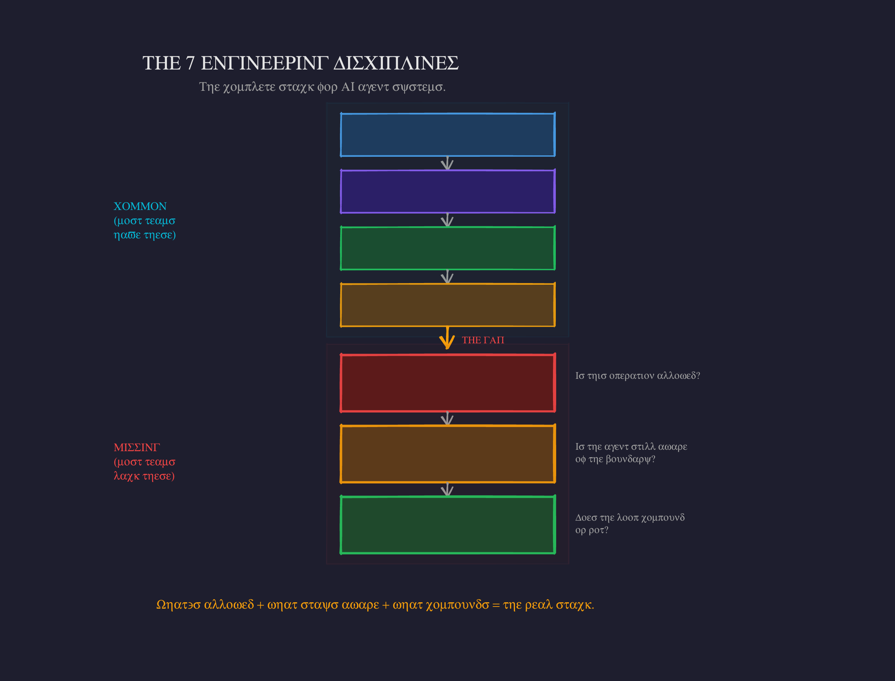

The 7 Engineering Disciplines for AI Agents
Prompt Engineering, Context Engineering, Tool Engineering, and Harness Engineering are already common. The next three extend the stack into the deeper problem: making AI agent systems safe, bounded, self-aware, and capable of improving instead of drifting.

The Stack
Prompt Engineering — shape the instruction ↓ Context Engineering — shape what the model sees ↓ Tool Engineering — shape what the model can do ↓ Harness Engineering — shape the loop ↓ Admissibility Engineering — shape what's allowed ↓ Concentration Engineering — shape sustained awareness ↓ Emergence Engineering — shape the feedback loop
The common hype-cycle version says: Agents need better prompts, better context, better tools, and better harnesses.
That is true, but incomplete.
The deeper technical question is:
What makes a transformation allowed, what keeps the model aware of that allowance while acting, and what makes the whole loop compound instead of rot?
1. Prompt Engineering
Prompt Engineering is the discipline of shaping the local instruction surface. It answers: What do I say to the model so it performs this operation correctly?
Use this style. Follow these steps. Return JSON. Do not edit before reading. Explain contradictions explicitly.
Prompt Engineering is still useful, but it is not enough for agents because agents are not single-message systems. Agents run across files, tools, memory, retries, hidden state, errors, and long trajectories.
The social-media realization was: Prompts are not the product. The system around the prompt is the product. That leads naturally to Context Engineering and Harness Engineering.
2. Context Engineering
Context Engineering is the discipline of deciding what the model sees, when it sees it, and in what shape. It answers: What information should be loaded into the model's working memory for this step?
This includes retrieval, memory, summaries, tool outputs, schemas, docs, examples, state, logs, task packets, compression, and context pruning.
The hypebeast version: Context Engineering is the new Prompt Engineering.
The technical version: Context Engineering is dynamic attention substrate management.
But Context Engineering alone does not solve the deeper problem. More context is not the same as admissible context. If the hidden edge is not represented anywhere, retrieval cannot retrieve it. If stale docs say X and code does Y, context injection can make the model worse by injecting false authority.
3. Tool Engineering
Tool Engineering is the discipline of designing the functions, APIs, MCP servers, commands, schemas, and affordances that let the agent act. It answers: What actions can the model take, and how are those actions exposed?
The hypebeast realization: Agents are only as good as their tools.
The technical correction: Agents are only as good as their tools plus the conditions under which tool use is valid.
A tool can be perfectly designed and still dangerous if the agent does not know what hidden hooks fire when it uses it. A tool call is not just an API call. It is an event inside an environment. That means Tool Engineering needs Action Causality Maps.
4. Harness Engineering
Harness Engineering is the discipline of building the control system around the model. It answers: How do we orchestrate the model, tools, context, memory, validation, retries, policies, and completion criteria into a reliable agent loop?
when context gets loaded which tools are available which action is allowed how errors are handled when to retry when to escalate what counts as done what tests/evals must pass how state is persisted how costs are controlled
The hypebeast realization: The same LLM can be dumb or useful depending on the harness. Correct.
But Harness Engineering often still assumes the system can know enough by retrieval, tools, tests, and policies. The next layer says: First, we need to define whether the operation is even admissible. A harness without admissibility gates can reliably execute inadmissible actions. That is dangerous.
5. Admissibility Engineering
Admissibility Engineering is the discipline of determining whether an AI transformation is allowed under the currently known causal, semantic, and operational boundaries. It answers: Is this operation licensed by enough visible structure to be safely performed?
This is the missing layer under Harness Engineering. A harness may say: read files → edit → run tests → commit. Admissibility Engineering says:
Wait. Was the execution boundary closed? Were hidden callers found? Were generated files marked? Do docs/comments match behavior? Do tool calls trigger hidden state updates? Does this edit cross subsystem boundaries? What validates the specific semantic change?
The core invariant:
No transformation without a bounded witness path.
Admissibility vs Validation
Validation asks: Did the output pass?
Admissibility asks: Was this operation allowed before it happened?
You need both. Validation is post-transform. Admissibility is pre-transform and during-transform boundary control.
Admissibility vs Documentation
Documentation says: Here is what this means.
Admissibility says: Here is what must be known before this can be safely changed, trusted, or composed.
That is why a local breadcrumb like this is not merely a comment:
# DOCMAGIC: HIDDEN-CALL
# Called indirectly by: FlowPatternRegistry.hydrate()
# Contract: return shape must remain compatible with
# ChainConfig.from_node_output()
# Sync-with: tests/test_chain_hydration.py, docs/flowpatterns.md
def produce_node_output(...):
...
It is an admissibility marker. It tells a future agent: This function is not locally interpretable. You must include this hidden caller and contract in your edit boundary.
Read the full deep dive on Admissibility Engineering →
6. Concentration Engineering
Concentration Engineering is the discipline of keeping the model's active attention locked onto the correct admissible boundary while it acts. It answers: Can the agent remain aware of the system-shape it is operating inside?
This matters because even when the right facts are available, LLMs drift. They read the hook map, then edit the local file as if the hook map never existed. They read the contradiction, then harmonize it. They see tests, but forget the semantic target.
Context Engineering asks: What should be in the context window?
Concentration Engineering asks: How do we keep the model using the right part of the context at the right moment? That is a different discipline.
Concentration Engineering designs: active task packets, invariant reminders, pre-edit gates, contradiction elevation, context refresh hooks, execution-boundary summaries, hidden-edge checklists, attention anchors, and recursive self-checks.
7. Emergence Engineering
Emergence Engineering is the discipline of designing feedback loops so continuous AI systems become more capable, coherent, and self-describing over time instead of accumulating hidden debt. It answers: Does this loop compound or decay?
A degenerate agent loop:
agent sees partial context → edits local code → hidden edge breaks → docs drift → retrieval worsens → future agent trusts stale surface → system becomes less admissible
A productive emergence loop:
agent acts → system observes hidden effects → missing witnesses are detected → comments/docs/maps/tests are repaired → admissibility improves → future edits become safer → system becomes more self-readable
Emergence Engineering is the transition from the first loop to the second. It is not "emergence" as vague magic. It is concrete: feedback channels, state observation, drift detection, repair surfaces, admissibility gates, concentration scaffolds, self-model updates, and fixed-point criteria.
The Sharp Version
Prompt Engineering — say the right thing. Context Engineering — show the right things. Tool Engineering — expose the right actions. Harness Engineering — run the right loop. Admissibility Engineering — permit only bounded transformations. Concentration Engineering — keep attention inside the boundary. Emergence Engineering — make the loop compound.
Go Deeper
The 7 Disciplines are the foundation of the TWI framework library. Each discipline has its own deep dive — start with Admissibility Engineering, the layer most teams are missing.
Want to find out which discipline is the bottleneck in your AI systems? We map the 7-stack against your actual architecture and show you exactly where to invest.